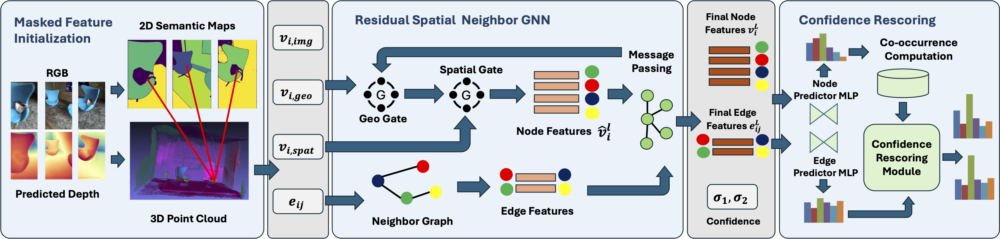

Modern 3D semantic scene graph estimation methods utilise ground truth 3D annotations to accurately predict target objects, predicates, and relationships. In the absence of given 3D ground truth representations, we explore leveraging only multi-view RGB images to tackle this task. To attain robust features for accurate scene graph estimation, we must overcome the noisy reconstructed pseudo point-based geometry from predicted depth maps and reduce the amount of background noise present in multi-view image features. The key is to enrich node and edge features with accurate semantic and spatial information and through neighbouring relations. We obtain semantic masks to guide feature aggregation to filter background features and design a novel method to incorporate neighbouring node information to aid robustness of our scene graph estimates. Furthermore, we leverage on explicit statistical priors calculated from the training summary statistics to refine node and edge predictions based on their one-hop neighbourhood. Our experiments show that our method outperforms current methods purely using multi-view images as the initial input.
SCRSSG builds a 3D scene graph from a sequence of posed RGB images. We used a pretrained depth estimator model, DepthAnything, to predict metric depth. Next, we run an RGB-D SLAM system to obtain predicted point clouds and covisibility graphs. Our MFI module initializes the node features of the scene graph by combining multi-view image representations from a pretrained image encoder with PointNet features with enhancement from SAM masks. Then, our RSNGNN module integrates both geometric and spatial features into the initial node feature via residual connections. Lastly, our CR module refines node and predicate predictions using prior knowledge to mitigate the impact of incorrect initial predictions The resulting 3D scene graph contains more prior information from geometric, spatial, and statistical sources of the scene, which enhances the richness of the node and predicate representations to improve the model's performance on 3D scene graph estimation.
